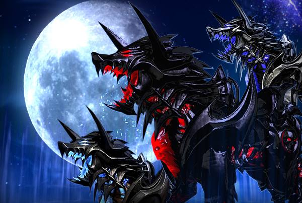
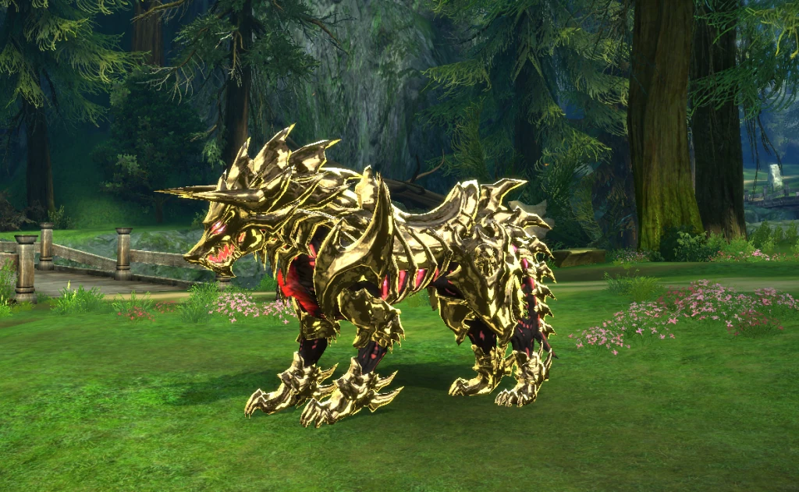
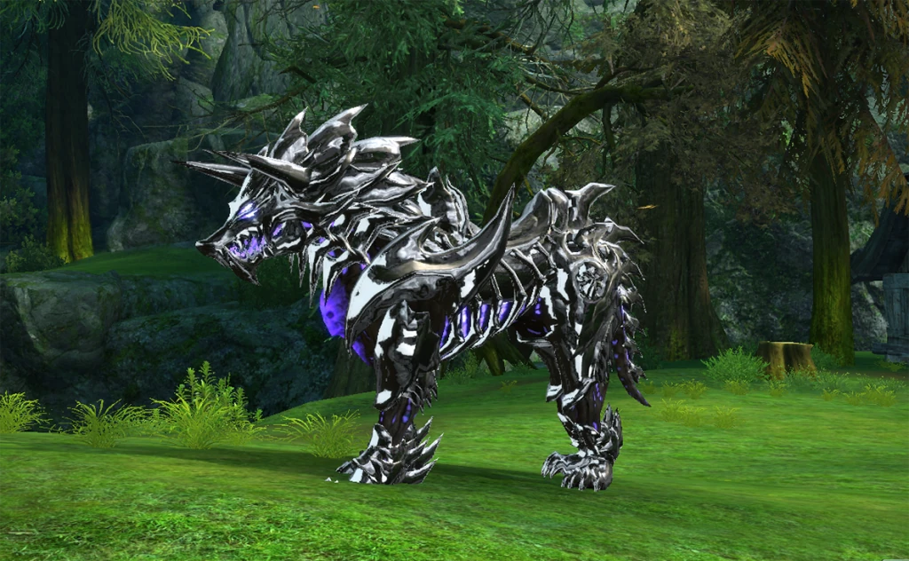

Shader Programming
I usually have created shaders which are used for freemium items in TERA. Most of them were made especially for fascination that it would attract more users.
  


<Metallic Wolf>
Sometimes, I added particles or techniques to the items for better and unique looking.
<Cloak with particle system>
<Steampunk style>
<Blade with blink light>
Also, To set the environment atmosphere, I made a lot of shaders which are used for background such as slowly moving cloud in sky, fast flowing water in steam bank and light shaft, bubbles, caustic in deep sea and coastline, etc.
<Airship in the sky>
<Fast flowing water>
Represent background atmosphere of the deep sea in TERA

Releated